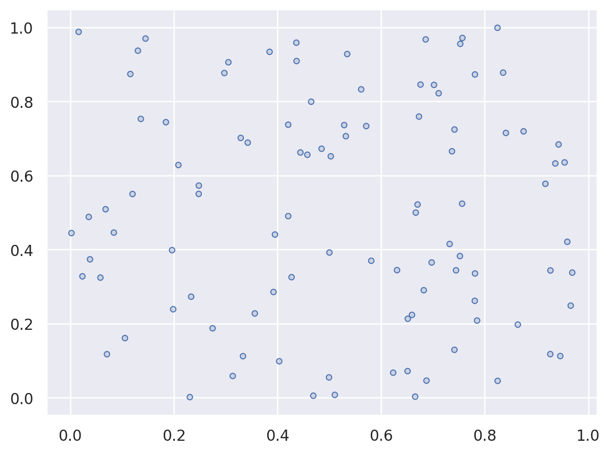
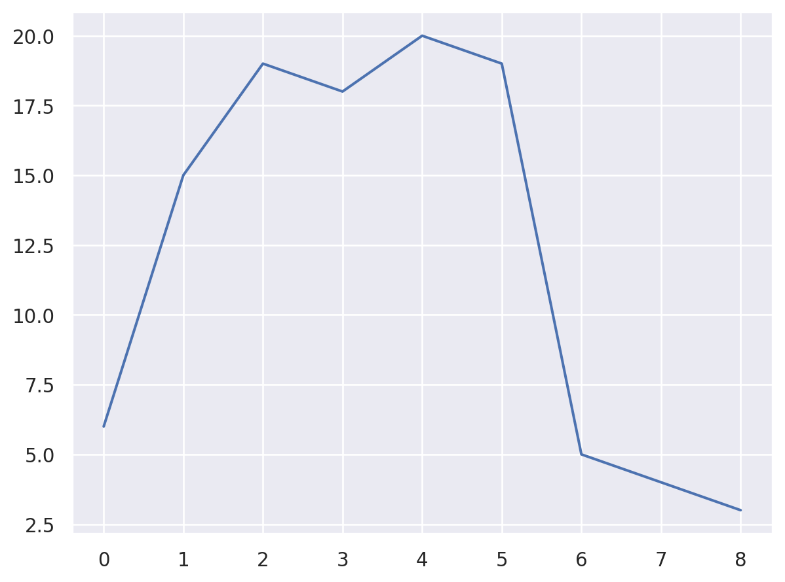

from scipy.spatial import ConvexHull
import seaborn.objects as socore
random geometric graph class
RGG
RGG (n:int, r:float, d:int=2, law='binomial', shape=None)
random geometric graph
| Type | Default | Details | |
|---|---|---|---|
| n | int | average number of points | |
| r | float | connection radius | |
| d | int | 2 | dimension |
| law | str | binomial | either poisson or binomial |
| shape | NoneType | None | convex polytope |
rgg = RGG(100,0.05, law="poisson", shape=ConvexHull(np.random.default_rng().uniform(0,1,(6,2))))
rgg.V.distance_matrix.shape # poisson number(105, 105)p = so.Plot(x=rgg.V.points[:,0], y=rgg.V.points[:,1])
p.add(so.Dots())
rgg.adj{0: [23, 30, 43, 72],
1: [9],
2: [34, 42, 83],
3: [8],
4: [50, 71, 85, 88, 90],
5: [20, 44, 49, 50, 73, 101],
6: [87, 90],
7: [33, 76, 86, 89],
8: [3],
9: [1, 77, 94],
10: [36, 55, 66, 92, 99],
11: [],
12: [13, 27, 82],
13: [12, 67],
14: [16, 45, 57, 92],
15: [25, 52, 98],
16: [14, 45, 57],
17: [60],
18: [24, 47, 65, 68],
19: [58, 91],
20: [5, 44, 49, 61, 69, 73],
21: [22, 26, 44, 69, 93, 103],
22: [21, 26, 46, 93, 103],
23: [0, 30, 43, 72],
24: [18, 47, 65, 68],
25: [15, 52, 86, 98],
26: [21, 22, 31, 84],
27: [12, 82],
28: [],
29: [62],
30: [0, 23, 43, 48, 95],
31: [26, 84],
32: [61, 73, 100],
33: [7, 76, 86, 98],
34: [2, 42, 59, 83],
35: [],
36: [10, 55, 66, 96, 99],
37: [43],
38: [80, 89],
39: [],
40: [76, 89],
41: [78],
42: [2, 34, 95],
43: [0, 23, 30, 37, 95],
44: [5, 20, 21, 61, 69, 73, 93, 101],
45: [14, 16, 57, 92],
46: [22, 102, 103],
47: [18, 24],
48: [30, 53, 95],
49: [5, 20, 50, 61, 73],
50: [4, 5, 49, 90, 101],
51: [],
52: [15, 25, 96, 98, 104],
53: [48, 95],
54: [60, 75, 79],
55: [10, 36, 66, 92],
56: [63, 85, 88],
57: [14, 16, 45, 92],
58: [19, 91],
59: [34, 83],
60: [17, 54, 79],
61: [20, 32, 44, 49, 65, 69, 73, 100],
62: [29],
63: [56, 71, 85, 88],
64: [],
65: [18, 24, 61, 73],
66: [10, 36, 55],
67: [13, 82],
68: [18, 24],
69: [20, 21, 44, 61, 73],
70: [75, 102],
71: [4, 63, 85, 88, 101],
72: [0, 23],
73: [5, 20, 32, 44, 49, 61, 65, 69],
74: [99],
75: [54, 70, 79, 102],
76: [7, 33, 40, 86, 89],
77: [9],
78: [41],
79: [54, 60, 75],
80: [38, 89],
81: [97],
82: [12, 27, 67],
83: [2, 34, 59],
84: [26, 31],
85: [4, 56, 63, 71, 88],
86: [7, 25, 33, 76, 98],
87: [6],
88: [4, 56, 63, 71, 85, 90],
89: [7, 38, 40, 76, 80],
90: [4, 6, 50, 88],
91: [19, 58],
92: [10, 14, 45, 55, 57],
93: [21, 22, 44, 101, 103],
94: [9],
95: [30, 42, 43, 48, 53],
96: [36, 52, 99, 104],
97: [81],
98: [15, 25, 33, 52, 86, 104],
99: [10, 36, 74, 96],
100: [32, 61],
101: [5, 44, 50, 71, 93],
102: [46, 70, 75],
103: [21, 22, 46, 93],
104: [52, 96, 98]}RGG.n_comp
RGG.n_comp ()
rgg.n_comp()16RGG.degree_distribution
RGG.degree_distribution ()
d_np = rgg.degree_distribution()
d_nparray([[ 4, 20],
[ 1, 15],
[ 3, 18],
[ 5, 19],
[ 6, 5],
[ 2, 19],
[ 0, 6],
[ 8, 3]])(
so.Plot(x=d_np[:,0], y=d_np[:,1])
.add(so.Line())
)
RGG.cyclic
RGG.cyclic ()
rgg.cyclic()TrueRGG.n_tri
RGG.n_tri ()
rgg.n_tri()94